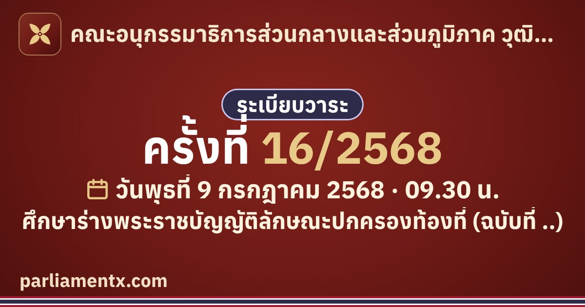

ครั้งที่ 16/2568 (9 ก.ค. 2568) · คณะอนุกรรมาธิการส่วนกลางและส่วนภูมิภาค วุฒิสภา
ศึกษาร่างพระราชบัญญัติลักษณะปกครองท้องที่ (ฉบับที่ ..)
เปิดอ่านการประชุมครั้งนี้
ศึกษาร่างพระราชบัญญัติลักษณะปกครองท้องที่ (ฉบับที่ ..)
เปิดอ่านการประชุมครั้งนี้